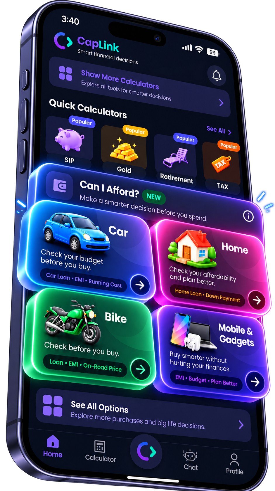

Features
Everything you need to make smarter financial decisions.
Decision comparisons, affordability checks, calculators, a Financial Health score, and an AI assistant — all working from numbers you enter yourself.

Decision Comparisons
See the financial trade-offs between two choices before you commit — across years, not just this month.
- Side-by-side totals, such as overall outflow over a chosen period
- Accounts for factors like interest, appreciation, and opportunity cost
- Results shown in plain language, with today's-money context
Example use casePriya pays rent and is weighing a home loan. She enters rent, property price, down payment, and loan terms, then compares 10-year outcomes for both paths.

Affordability — "Can I Afford?"
Check whether a big purchase fits your budget before you spend, including loan, EMI, and running costs.
- Car, Home, Bike, and Mobile & Gadgets checks
- Considers down payment, EMI, and ongoing costs
- Helps you set a comfortable price range
Example use caseArjun wants a new bike. He enters his income, existing EMIs, and the on-road price to see whether the monthly instalment fits comfortably.

Financial Calculators
Quick, focused calculators for investing, loans, savings, tax, gold, and retirement.
- SIP, Lumpsum, SWP, EMI, Loan, FD, Gold, Retirement, Inflation, Tax
- Adjust inputs and watch estimates update
- Assumptions stay visible, so results are easy to interpret
Example use caseMeera wants to start a monthly SIP. She tries a few amounts and expected-return assumptions to see a range of possible outcomes over 15 years.

Financial Health
A simple score out of 100 with a breakdown across emergency fund, cash flow, debt, investments, and protection.
- See your strongest and weakest areas at a glance
- Edit your inputs any time as life changes
- An educational tool — not a credit score or professional assessment
Example use caseRahul learns his emergency fund scores low. He sets a goal to build three months of expenses before taking on a new loan.

CapLink Assistant
Ask questions in your own words and get AI-generated explanations, ideas, and suggested next steps.
- Explains calculator results and financial concepts
- Suggests relevant CapLink tools, like the retirement planner
- Educational and supportive — it can make mistakes
Example use caseAfter seeing her score, Ananya asks, "How can I reduce my debt?" and gets an overview of repayment approaches to explore.

Saved Calculations
Come back to a comparison or calculation later instead of starting from scratch.
- Revisit past results while you think a decision over
- Tweak inputs and compare against your earlier scenario
- Keep track of the scenarios you're weighing up
Example use caseVikram saves a Car Cash vs Loan comparison, then reopens it a week later after the dealer quotes a different interest rate.
Illustration — actual app layout may differ.
Personalized Insights
Insights shaped by the details you share — your goals, age, dependents, and finances — so guidance feels relevant to you.
- Highlights areas that may need attention first
- Connects your Financial Health with practical next steps
- Based only on information you've entered — never your bank data
Example use caseA user with variable income and no emergency fund sees an insight suggesting they build a safety buffer before increasing investments.

See your options more clearly.
Download CapLink and explore the tools with your own numbers.